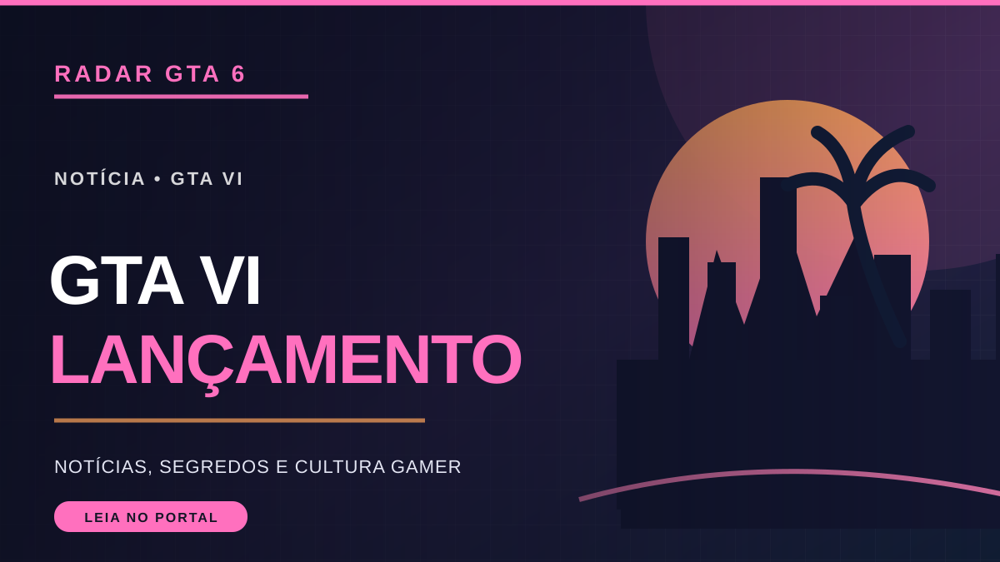
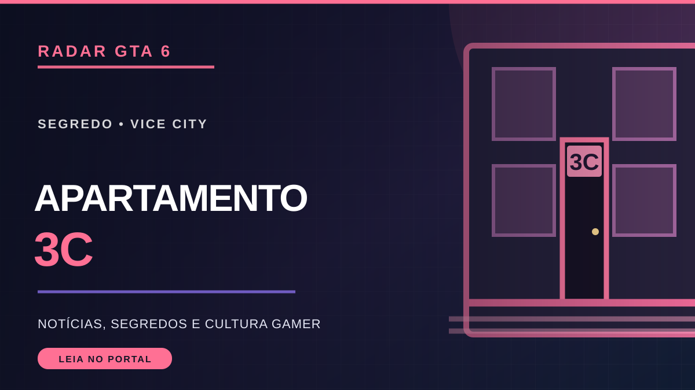
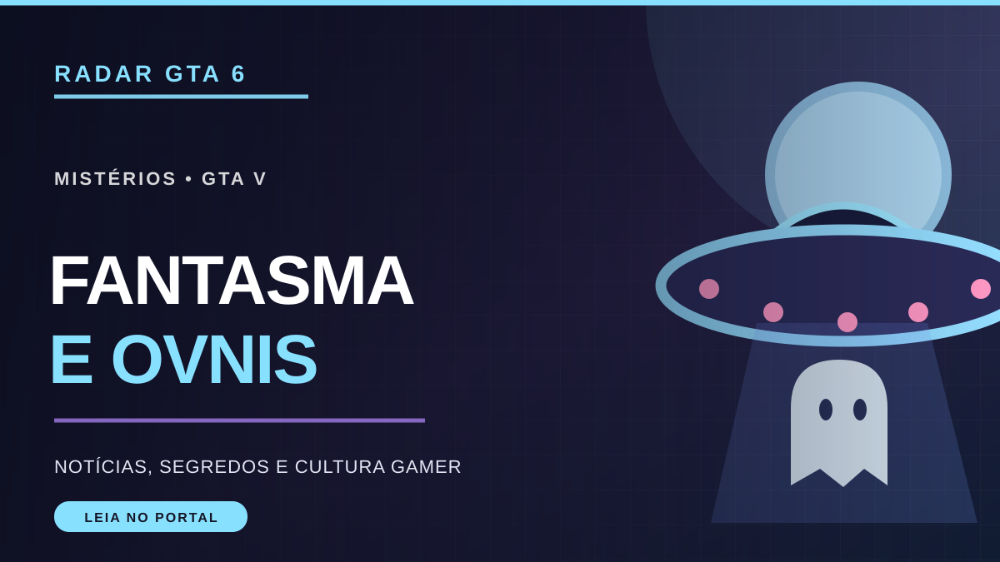

VICE CITY
JÁ ESTÁ AQUI.
O universo de GTA VI num só lugar. Notícias, teorias, curiosidades e tudo o que a comunidade quer descobrir.
EXPLORAR O RADAR →O QUE VOCÊ QUER ENCONTRAR?
9 matérias encontradas
Nenhuma matéria encontrada. Experimente outro termo ou escolha “Todos”.
ÚLTIMAS DO RADAR

GTA VI já está disponível!
A Rockstar confirmou o lançamento em 19 de novembro. Saiba as plataformas e os detalhes oficiais.

Mapa oficial de Leonida para impressão
Veja onde acessar o mapa e o pôster disponibilizados pela Rockstar.
ARQUIVO: EXPECTATIVAS DA COMUNIDADE ANTES DO LANÇAMENTO

Uma polícia mais inteligente?
O que esperamos da inteligência artificial e das perseguições em GTA VI.

O mundo de Vice City
Praias, cidades, estradas e possibilidades para explorar.

Quatro coisas que queremos ver
As expectativas que estão movimentando os fãs de GTA VI.
SEGREDOS E EASTER EGGS
Guias para encontrar lugares escondidos nos jogos clássicos da franquia GTA.

Você já encontrou o ovo escondido no prédio da VCN?
Uma janela aparentemente normal leva Tommy Vercetti a um dos segredos mais divertidos do GTA clássico. Descubra onde fica e como entrar.
DESCUBRA O CAMINHO →
O ovo de Páscoa escondido da VCN
Onde fica a janela secreta de Downtown e como entrar na sala do ovo de chocolate.

Apartamento 3C e a homenagem a Scarface
O caminho até o banheiro secreto com motosserra em Ocean Beach.

Fantasma e OVNIs: locais e horários
Mount Gordo, Mount Chiliad e o disco voador submerso: como encontrar cada um.

A placa escondida na Gant Bridge
Descubra a mensagem que a Rockstar deixou no alto da ponte de San Fierro.
RADAR EM VÍDEO
Grand Theft Auto VI: An Extended Look
Assista à apresentação oficial da Rockstar Games e explore mais detalhes de Leonida. O vídeo é da desenvolvedora, não do Radar GTA 6.
Conheça nosso canal no YouTube → O player do YouTube é carregado somente quando você clica para assistir.